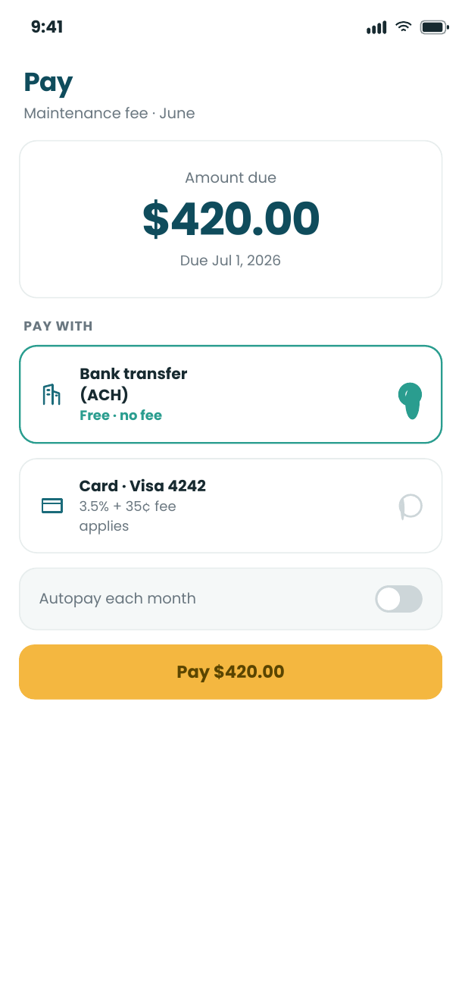
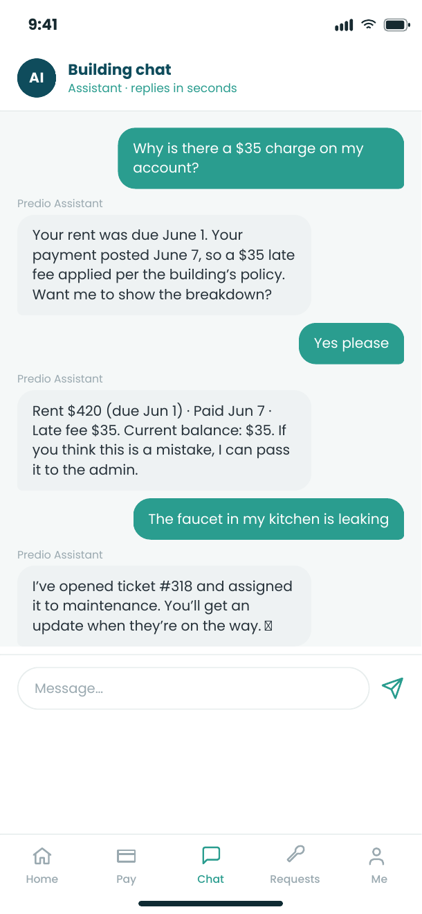
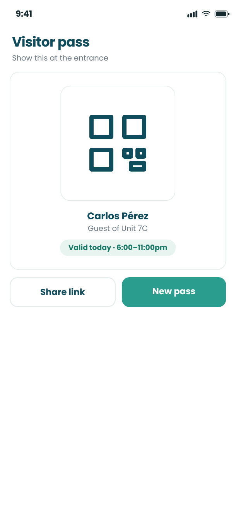
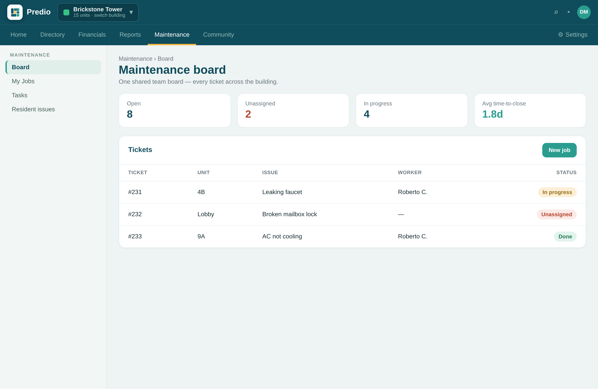
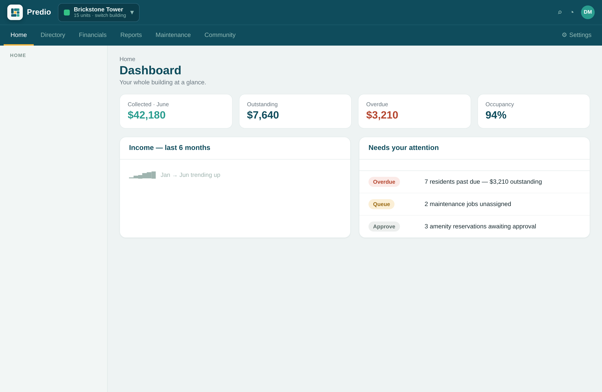
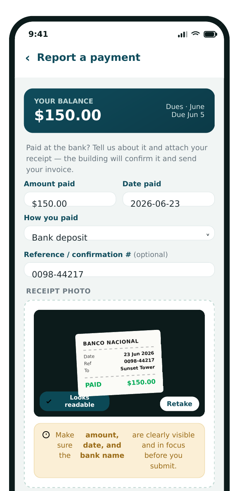
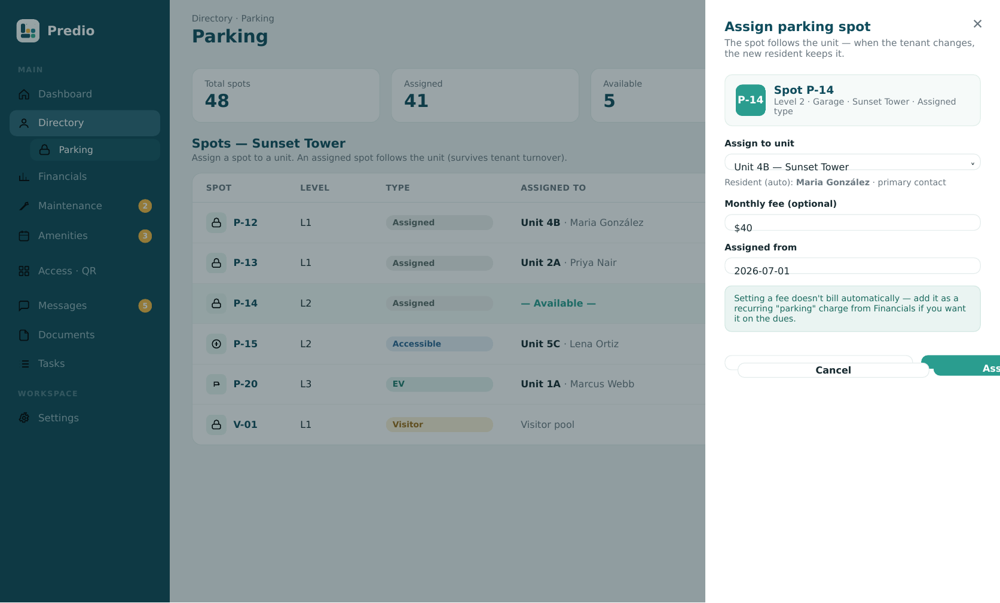
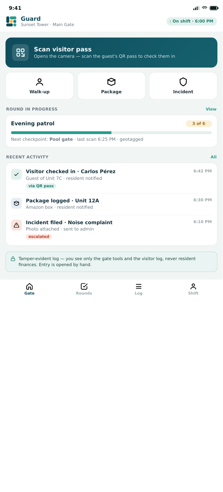
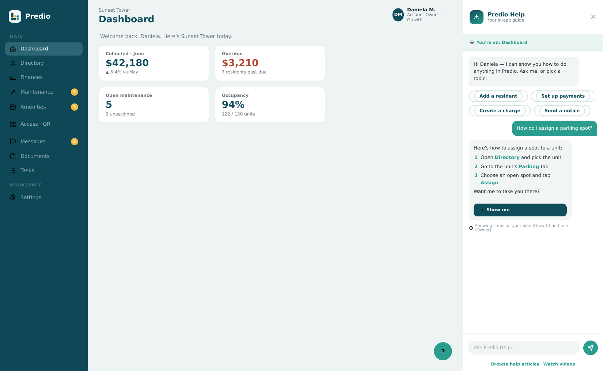
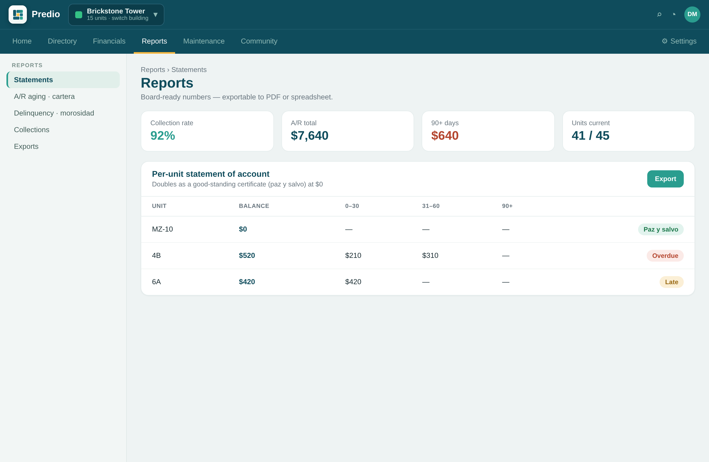

Everything Predio does — in one place.
Every tool you need to run a property, from collecting dues to talking with residents. Simple enough for a single house, powerful enough for a whole portfolio.
Dues & online payments
Collect maintenance fees and rent online by card or bank transfer. Set up autopay, send automatic reminders for overdue balances, and give every resident an instant digital receipt — so you stop chasing cash and checks.


Financial transparency & reporting
See real-time income reports, accounts receivable, and balances at a glance — and share them with owners or your board in a click. Transparency that builds trust and makes month-end painless. On Premium, print a per-unit statement of account — or a good-standing certificate (paz y salvo) when the unit is current — plus accounts-receivable aging and a delinquency report.
Direct in-app messaging
A private, two-way chat between the administrator and each resident or tenant — right inside the app, with free push notifications. No more scattered WhatsApp groups or missed texts. Keep email as a fallback for the most critical notices.


Smart access & visitor control
Residents generate QR codes for guests and deliveries, and every entry is logged securely. Know who comes and goes, and give your front desk or guard a simple way to verify visitors.
Amenity reservations & maintenance
Let residents book the pool, gym or event room in a couple of taps, and report maintenance issues with a photo. Residents and the assigned worker coordinate right on the ticket, and admins track and resolve every request so nothing slips through the cracks.


Tasks & multi-property management
Assign and track work with built-in reminders, and manage one property or fifty from a single login — residential, commercial or mixed. Every user is free and unlimited — residents and staff alike, with no seats and no per-user charges.
A 24/7 AI assistant, built in
Predio's AI Agent works inside resident chat, in English or Spanish. It answers residents around the clock, turns a message and a photo into a maintenance ticket, and explains a resident's balance and charges from the live ledger — and your team can take over any conversation at any time. Switch on Collections mode and the same agent proactively reminds residents about overdue payments on a schedule you set — gently, in their language, and it stops the moment they pay.


Report-a-payment, with proof
Where residents pay at the bank instead of online, they snap a photo of the receipt and report the payment in the app. Your team gets a notification, confirms it against your account, and approves — and the invoice is generated automatically, with the date and amount on record.
Parking, organized
Keep an inventory of every parking spot and assign it to a unit in a click. The spot follows the unit, so it survives tenant turnover, and residents see their assigned space right in the app — with an optional monthly fee.


Security & guard module
For staffed buildings and gated communities, Guard & Security — included on every plan at no extra cost — puts your guards on the same app. They check visitors in by scanning the resident’s QR pass, log packages, walk geolocated rounds, and file incidents — all on a tamper-evident log. Software-only, with unlimited free guard logins.
Built-in help, on every screen
A free, always-on guide lives behind the “?” on every screen — for admins and residents alike. Ask it anything in English or Spanish and it shows you exactly how to do it, scoped to your plan and role. New staff onboard themselves, and your team stops fielding the same how-do-I questions.


Owner statements & good-standing certificates
On Premium, print a per-unit statement of account in one click — or a good-standing certificate (paz y salvo) when the unit is current, the proof owners need to sell or transfer. Plus building-wide accounts-receivable aging, a delinquency report, and a collections summary — the reports a professional administrator runs every month.
See it on your own property.
Join the waitlist and we'll show you Predio with your buildings in mind.
Join the waitlist